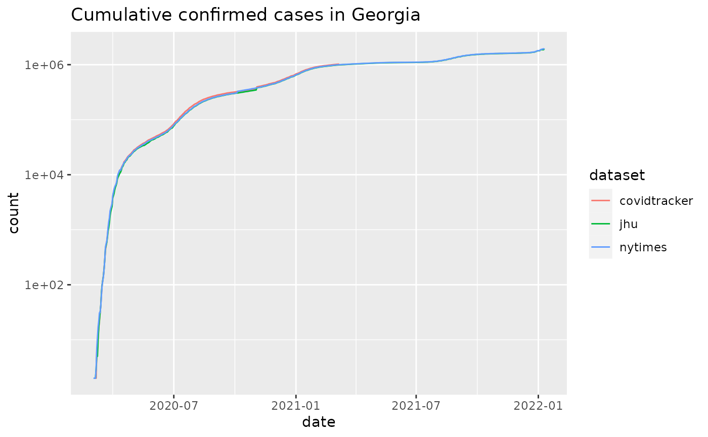
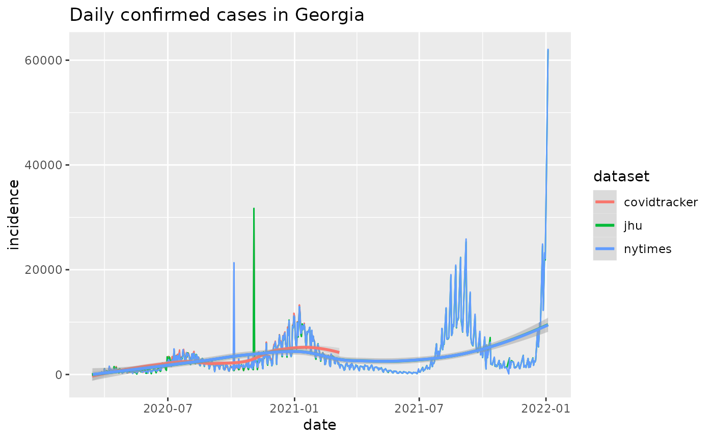

R/combined_us_cases_data.R
combined_us_cases_data.RdThis is a convenience function to combine results from sources providing US state-level datasets. A primary use case is to provide fodder for comparison and quality control over all the available datasets.
combined_us_cases_data()
Other case-tracking:
align_to_baseline(),
beoutbreakprepared_data(),
bulk_estimate_Rt(),
covidtracker_data(),
ecdc_data(),
estimate_Rt(),
eu_data_cache_data(),
jhu_data(),
nytimes_county_data(),
owid_data(),
plot_epicurve(),
usa_facts_data()
#> # A tibble: 6 x 6 #> # Groups: fips [6] #> dataset date fips count incidence state #> <chr> <date> <chr> <dbl> <dbl> <chr> #> 1 jhu 2020-01-22 00001 0 NA AL #> 2 jhu 2020-01-22 00002 0 NA AK #> 3 jhu 2020-01-22 00004 0 NA AZ #> 4 jhu 2020-01-22 00005 0 NA AR #> 5 jhu 2020-01-22 00006 0 NA CA #> 6 jhu 2020-01-22 00008 0 NA CO#> [1] "jhu" "covidtracker" "nytimes"library(ggplot2) plot_epicurve(cus, filter_expression = state == 'GA',color='dataset') + ggtitle('Cumulative confirmed cases in Georgia')plot_epicurve(cus, filter_expression = state == 'GA' & incidence>10, case_column='incidence', color='dataset', log=FALSE) + ggtitle('Daily confirmed cases in Georgia') + geom_smooth(alpha=0.25)#>